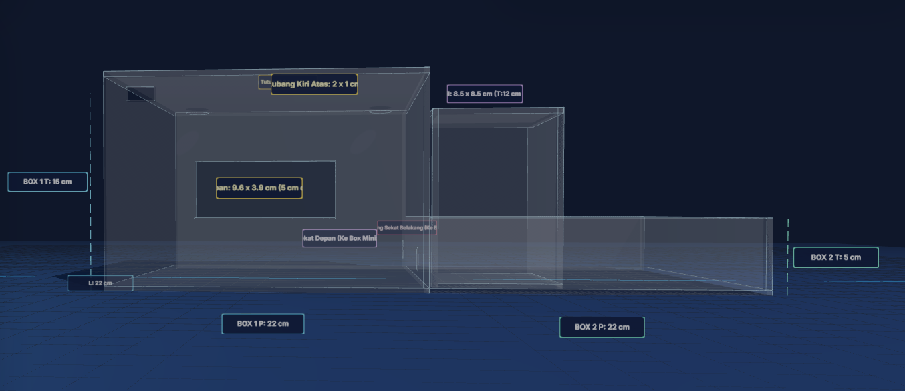
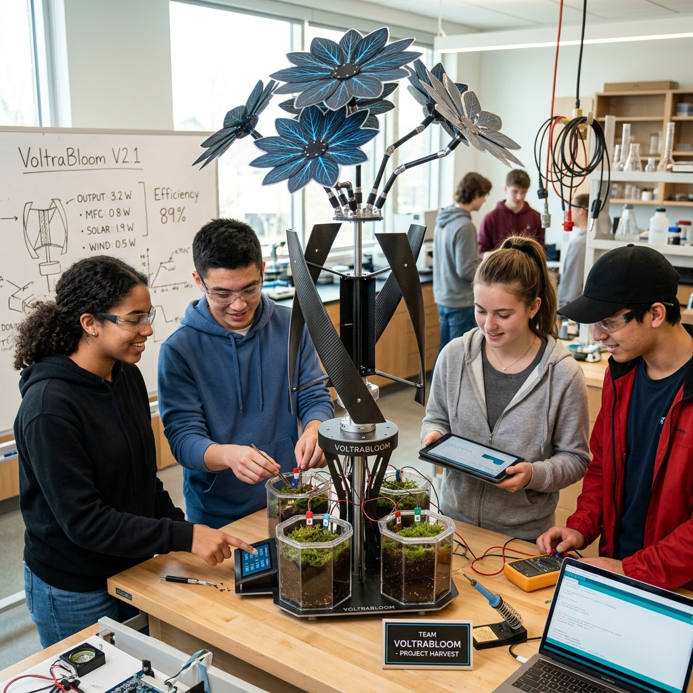
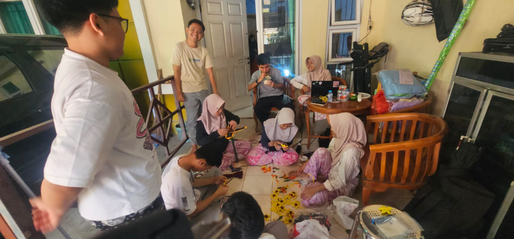
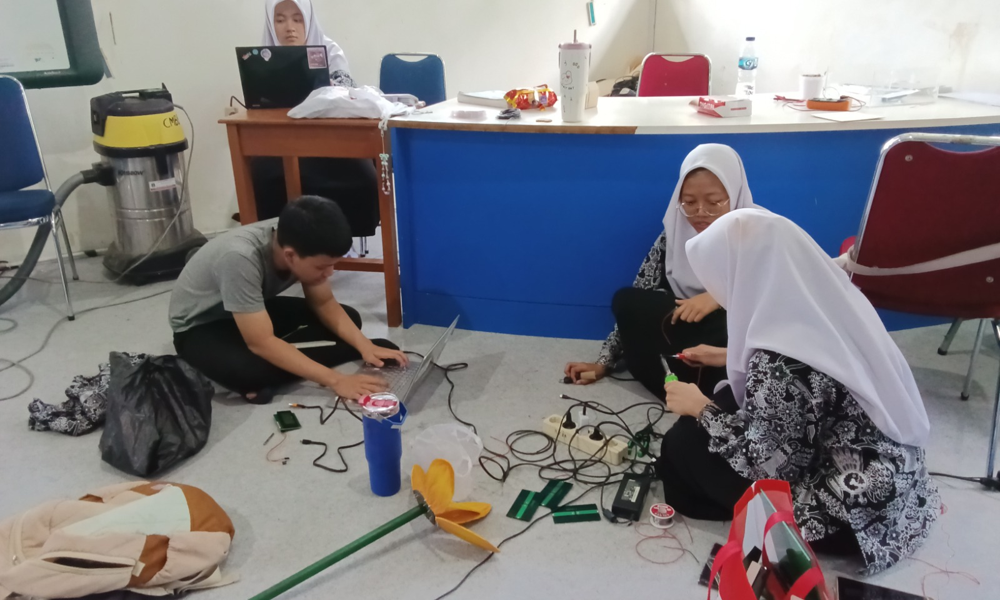

Loading experience
Hybrid energy system
Step 01 — Solar
This intelligent flower-shaped petal system is integrated with highly efficient monocrystalline solar panels. The biomimetic flower structure optimizes solar radiation capture from various ambient angles to maximize electricity generation throughout peak daylight hours.
Step 02 — Wind
The micro vertical-axis wind turbine (VAWT) modules are positioned over airflow channels to harvest kinetic energy from omnidirectional wind currents. This turbine acts as a dependable backup power supply, ensuring continuous electrical output even during overcast conditions or nighttime.
Step 03 — Bioelectric
Within the fenced sub-compartment, VoltraBloom incorporates Soil Microbial Fuel Cell (SMFC) technology distributed across 5 organic soil pots. The system captures metabolic electrons released by indigenous subterranean microorganisms to generate stable bioelectricity 24/7.
Development Gallery




VoltraBloom — Hybrid Renewable Emergency Power System